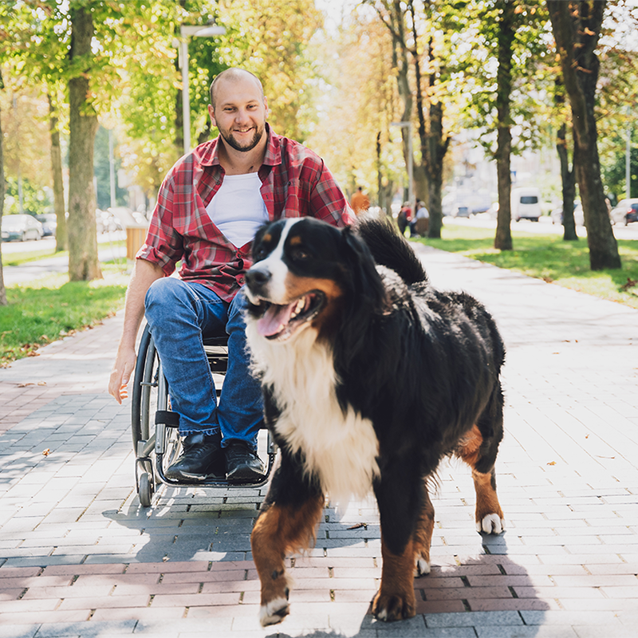

Twin Cities Animal Rescue grew from a shared passion for helping
animals and strengthening the bond between people and their pets.
What began with a commitment to helping animals in need has grown into a
community-centered rescue dedicated to making a lasting difference.
Every rescue story is different. Some animals arrive frightened or uncertain.
Others need medical attention, behavioral support, or simply a safe place to decompress.
Through dedicated volunteers, foster families, adopters, donors, and community partners,
we are able to meet those needs one animal at a time.
We know that rescue doesn't end when an animal leaves our care.
It continues through responsible adoption, education, community support,
and a commitment to helping families and animals succeed together.
Our goal is simple: rescue with compassion, adopt with purpose, and build a community where every animal has a chance to belong.

We treat every animal with patience, kindness, and respect.
We recognize that each animal has a unique history, personality, and set of needs.
A difficult past should never define an animal's future. We believe in giving animals the opportunity
to heal, grow, and find the loving homes they deserve.
We are committed to thoughtful, ethical rescue practices. Our work is centered on the well-being of
the animals and the long-term success of their placements.
Animal rescue is a team effort. Volunteers, foster families, adopters,
donors, veterinarians, businesses, and
fellow rescue organizations all play an important role
in creating better outcomes for animals.
Our mission isn't simply to find homes. It's to create lasting matches between animals and people
and to help build relationships that last a lifetime.
Our veterinary partners help provide wellness exams, vaccinations, emergency care,
and medical treatment for animals entering our program. Their compassionate team plays
an important role in helping every rescue begin their journey toward a healthy new life.
Safe Haven Pet Supply helps keep our shelter stocked with food, bedding, toys, crates, and
other everyday essentials. Their generous support ensures our animals have a comfortable
and enriching environment while they wait for their forever homes.
Through community donations and fundraising support, Hearts for Homeless Pets Foundation helps
cover medical expenses and emergency care for animals with special needs. Their commitment
helps us say “yes” to animals who might otherwise have nowhere to go.
Green Valley provides temporary boarding and basic training support for dogs who need additional
time, structure, or socialization before adoption. Their team helps prepare our dogs for successful
transitions into their new families.
The Community Pet Pantry works with us to provide food and supplies to local families experiencing
temporary financial challenges. Together, we help keep pets with the people who love them and reduce
preventable shelter surrenders.
Behind every successful rescue is a community of dedicated volunteers. From fostering and transportation
to adoption events and fundraising, our volunteers make it possible for us to reach more animals and
families every day.
To all of our partners, supporters, fosters, adopters, and volunteers: thank you for helping us create brighter futures for animals in our community.

|

|

|

|